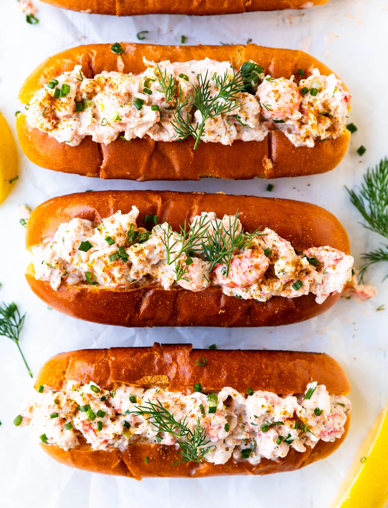

Lobster Roll

Ingredients
- 1 lb (450 g) lobster meat, cut into large pieces
- 3 tbsp (45 ml) mayonnaise
- 2 tbsp finely diced celery
- 1 tbsp chopped fresh chives
- 1 tsp chopped fresh tarragon
- 1 tsp (5 ml) whole-grain mustard
- 1 tsp (5 ml) lemon juice
- 1 pinch cayenne pepper
- 8 hot dog buns
- 3 tbsp (40 g) butter, softened
- 8 Boston lettuce leaves
- Mayonnaise, to taste
Description
- In a bowl, gently combine all the lobster ingredients. Season lightly with salt. Refrigerate until ready to serve.
- Spread the butter on the outer sides of the hot dog buns.
- In a non-stick skillet over medium-high heat, brown the buns on both sides.
- On a work surface, spread the mayonnaise on the insides of the buns, add lettuce leaves, and generously top with the lobster mixture.
- Serve immediately. The Lobster Rolls are delicious with Beer-Battered Onion Rings.
Home